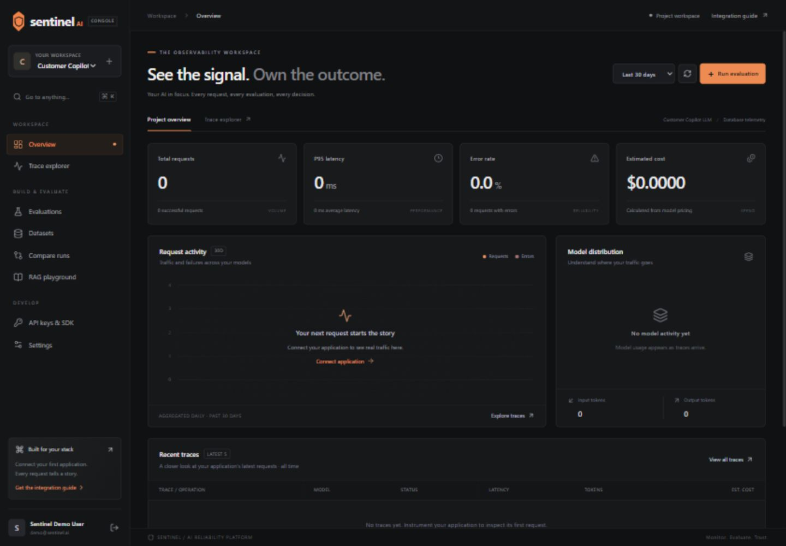

An LLM observability and evaluation platform. Inspect traces, compare outputs, and explore retrieval in one developer console.
Read the case study →AI / ML Engineer
I build intelligent applications, from the math underneath to the experience on screen. Currently working with Python, TensorFlow, React, and FastAPI.
Currently exploring — reliable AI & thoughtful interfaces

An LLM observability and evaluation platform. Inspect traces, compare outputs, and explore retrieval in one developer console.
Read the case study →Turning handwritten pixels into predictions with a TensorFlow neural network, ReLU layers, and a Softmax output.
Linear regression from scratch. An interactive Streamlit experience.
Working at the intersection of intelligent systems and learning experiences. Bringing machine learning foundations and thoughtful interfaces together.
I’m Varun, an AI/ML engineer with a computer science background and a curiosity for how things work. My projects trace a path from implementing gradient descent by hand to building neural networks and full-stack AI tools.
I enjoy both sides of the equation: understanding the model underneath and shaping the experience it makes possible. My approach is simple — build, inspect, and make the next version better.
First principles. Useful applications. Always learning.
Interesting problems, thoughtful teams, and ideas worth building. Let’s connect.
Stay curious. Keep building.